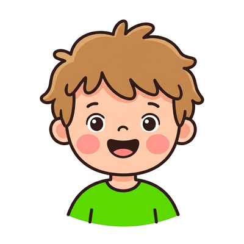
Pexesodvojice obrázků, anglická slova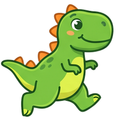
Dinosaurusskákání přes kaktusy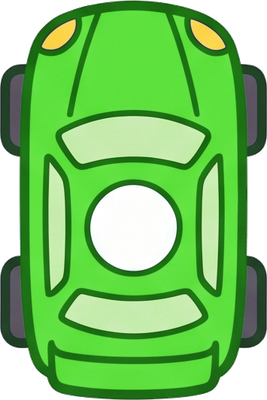
Závodylouka, poušť, zima, cukrová země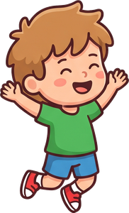
Skákačkaplošinovka, šnek, tunel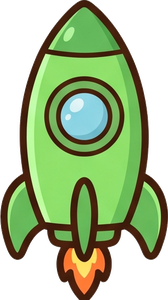
Raketyvesmírná střílečka, chobotnice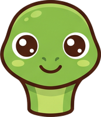
Hadovoce s anglickými slovy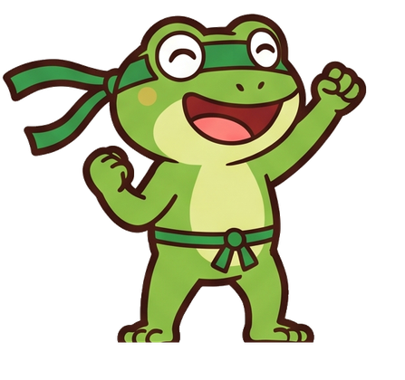
Bojovkazvířecí nindžové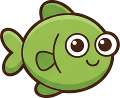
Rybičkyvětší žere menší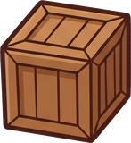
Bedýnkyposouvání beden na hvězdy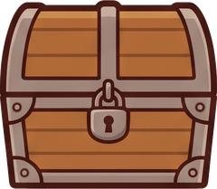
Bludiště20 úrovní v 5 světech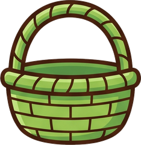
Chytačkakošík a padající ovoce Hasičihasičské auto, požáry, koťátko
Hasičihasičské auto, požáry, koťátko
 Fotbal a hokejgóly na trávě i na ledě
Fotbal a hokejgóly na trávě i na ledě
 Bruslepark, dráha, lyže, snowboard, plavání
Bruslepark, dráha, lyže, snowboard, plavání
 Pěnovkybitva pěnovými šipkami
Pěnovkybitva pěnovými šipkami
 Kostkypadající kostky
Kostkypadající kostky
 Ježcihledání ježků v trávě
Ježcihledání ježků v trávě
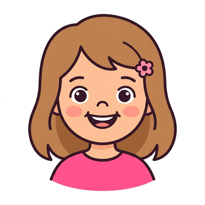
Drahokamytři stejné drahokamy Křečci domůlogika se šipkami
Kuličkakoulení po dráze v oblacích
Pinballploutve a hvězdy
Křečci domůlogika se šipkami
Kuličkakoulení po dráze v oblacích
Pinballploutve a hvězdy
 Delfínzpěv, delfíňata, perly
Delfínzpěv, delfíňata, perly
 Kuřátkaslepička a kuřátka do kurníku
Kuřátkaslepička a kuřátka do kurníku
 Tanecpapoušek ukáže, ty zopakuj
Tanecpapoušek ukáže, ty zopakuj
 Rybařeníudice, ryby a stará bota
Rybařeníudice, ryby a stará bota